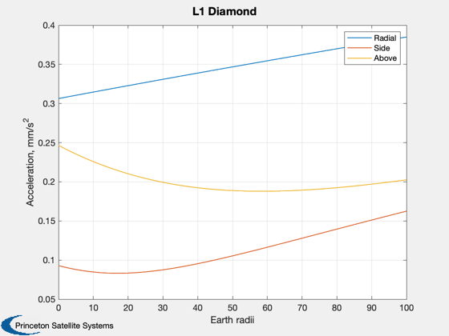
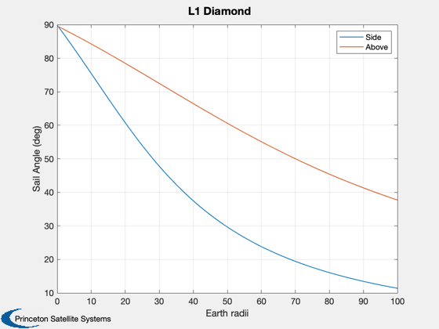

L1 Diamond formation
Note: curves have the correct shapes but unexplained offsets.
Since version 7. ------------------------------------------------------------------------ Reference: Carl G. Sauer, The L1 Diamond Affair. 14th AAS/AIAA Space Flight Mechanics Conference. Maui, Hawaii, 2004. AAS 04-278 ------------------------------------------------------------------------ See also SubL1Accel., Plot2D ------------------------------------------------------------------------
Contents
%-------------------------------------------------------------------------- % Copyright (c) 2006 Princeton Satellite Systems, Inc. % All rights reserved. % Comprehensive Solar Sail Simulation SBIR NNM06AA38C %-------------------------------------------------------------------------- % Constants AU = 149597870.691; RE = 6378;
Displacement in Earth radii of L1 Diamond origin towards the sun
%-----------------------------------------------------------------
d = 0:1:100;
L1 location from Earth/Moon, in AU
%-----------------------------------
l = 0.0100782410588807;
Radial displacements
%--------------------- dX = [250 0 0]*RE/AU; dAU = d*RE/AU; acc0 = zeros(3,length(d)); alfa = zeros(2,length(d)); for k = 1:length(d) % Ecliptic longitude and latitude theta = asin(125*RE/(1-l-dAU(k))/AU); phi = asin(250*RE/(1-l-dAU(k))/AU); [a,a0] = SubL1Accel( l+dX(1)+dAU(k), 0, 0 ); acc0(1,k) = a0; [a,a0,alpha] = SubL1Accel( l+dAU(k), theta, 0 ); acc0(2,k) = a0; alfa(1,k) = alpha; [a,a0,alpha] = SubL1Accel( l+dAU(k), 0, phi ); acc0(3,k) = a0; alfa(2,k) = alpha; end Plot2D(d,acc0*1e6,'Earth radii','Acceleration, mm/s^2','L1 Diamond') legend('Radial','Side','Above') Plot2D(d,alfa*180/pi,'Earth radii','Sail Angle (deg)','L1 Diamond') legend('Side','Above') %-------------------------------------- % PSS internal file version information %-------------------------------------- 